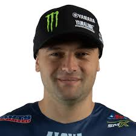
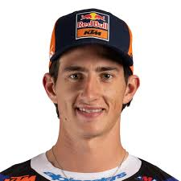
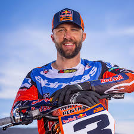

The premier class stacks former champions with riders peaking at the right time. Crafty race management and clean whoop speed often decide podiums.

Cooper Webb – Excellent at race craft and closing laps. Working with a new trainer to sharpen sprint speed in the opening five minutes.

Chase Sexton – Known for raw pace and technical precision. The priority in 2025 is cleaner exits through the whoops and reducing late-race tip-overs.

Eli Tomac – Veteran momentum builder. If he leaves the opening three rounds healthy, his corner aggression makes him a title threat again.
Rookies stepping up from 250SX bring explosive sprint speed but still need the endurance for full-length mains.
Jett Lawrence – Transitioning to a full 450SX season with smooth technique, excellent throttle control, and proven race IQ from his 250 dominance.
Haiden Deegan – Aggressive starter with improved whoop form. Needs consistent mains, but heat-race intensity already matches the class leaders.
Levi Kitchen – Quietly efficient and rarely rattled. Expect podiums on rutted East Coast tracks and steady points toward a 250 title bid.